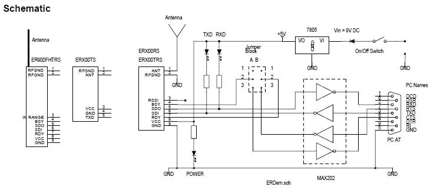
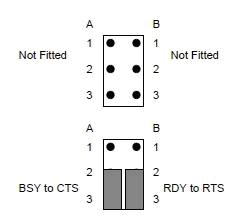

10.2 FM/AM Installation and Wiring
Development kit hardware SpecificationThe Radio Development kit comes with the following items:-
- PCB boards allows to plug in Transceiver module, and allow attach to PC via RS-232 interface.
- Easy-Radio Module, ER900TRS, Easy-Radio 868Mhz-920Mhz transceiver module.
- ¼ wave flexible whip antenna
- Serial cable for connection between PC to PCB board.
Board layout

Schematic Diagram
A 6 pin jumper block is fitted to the board. It comprises two columns of pins, A & B and the supplied jumpers should only be fitted North-South linking either Pin 1-2 or Pin 2-3 on each column as show below. The Jumpers should not be fitted East-West.

No Handshaking: in this configuration hardware handshaking is disabled.
Handshaking Enabled: They BSY output is connected (via logic to RS232 level translator) to CTS and RDY input is connected to RTS output.